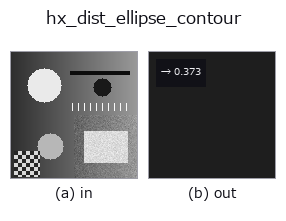

halcon_ext op• Data kinds: contour → feature
• Call: fullseye.apply(img, "hx_dist_ellipse_contour", a=0.5, b=0.5) (the 2-D model is one image plus two scalar knobs a,b∈[0,1])
• HALCON equivalent: dist_ellipse_contour_xld (the HALCON reference is a useful guide to its meaning and parameters)

*The figure is the actual output on a synthetic 128×128 input. Left: input, right: output. Point clouds are drawn as a top-down scatter (brightness = z), 1-D series as a line plot, volumes as the maximum-intensity projection along z, videos as the middle frame, complex images as magnitude; return values that are not pictures are shown as the values themselves.*
*Knob a does not change the output (measured: identical at 0.1 / 0.5 / 0.9).*
*Knob b does not change the output (measured: identical at 0.1 / 0.5 / 0.9).*
Stages (the ops that come before → this op, left to right):
▸ hx_dist_ellipse_contour: stages (docs site)
The mean distance of the contour points from the fitted ellipse boundary (small = close to an ellipse; a feature).
> The detailed description below is the original text — the summary and the headings are translated.
全 contour の点をまとめ、重心と座標共分散の固有分解から主軸系に移し、半軸を `2*sqrt(λ)`(各主軸の 2σ)とする
楕円を当てて、各点の正規化半径 `rad = sqrt((u/ax0)^2 + (v/ax1)^2) と 1 との差 |rad - 1|` の平均を 1 で
頭打ちした `np.float64` で返す。
• `a, b` は未使用。
• 点が 4 個未満なら 0.0。固有値は `1e-9` で下から clip。
注意: 値は画素距離ではなく楕円の正規化座標での差(無次元)。また半軸 2σ は「一様に塗られた楕円」に合う値で、
境界だけの点群では `σ = 半軸/sqrt(2)` になるため、完全な楕円輪郭でも 0 にならず約 0.29 の下駄が乗る(実測
0.2938)。比較用の相対指標として使い、絶対値で「楕円かどうか」を切らない。最大値版は `hx_dist_ellipse_points`、
軸比は `hx_fit_ellipse_contour`。
• gallery2d_halcon_ext family guide
• Sample-data catalog (download URLs / licences) — 2-D uses skimage.data (BSD/public domain) plus synthetic images; 3-D lists download URLs for real data sources (Stanford, PDS, …).
• Operator provenance and references — the sources of the research/methods this op family came from.
• The canonical algorithm (author, year) and its uses are named in the family usage guide above.
The program below has been verified to run (same input as the figure). In Studio's help this block becomes buttons that load and run it on the spot.
threshold 0.50 0.50 sk_find_contours 0.50 0.50 hx_dist_ellipse_contour 0.50 0.50
▸ Load this pipeline · Load & run
• gallery2d_halcon_ext — py -3.11 examples/gallery2d_halcon_ext.py
feature as input)halcon_ext)hx_gen_circle · hx_gen_ellipse · hx_gen_rectangle2 · hx_gen_checker_region · hx_gen_grid_region · hx_gabor · hx_fit_surface1 · hx_fit_surface2
*Provenance: ops.py — 2D operator registry. This per-op note is generated by tools/opdocs.py md (do not hand-edit).*
© 2026 Kazufumi Furuse — Fullseye operator documentation. Licensed under Apache-2.0.
{kind=link}